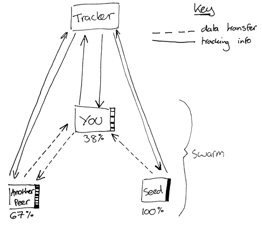

Bitrusty - Building a bittorrent client on Rust
Table of Contents
1 Introduction
1.1 Bittorrent Protocol
There are 2 main part of the protocol
- Sending a request1 with info of the torrent to a tracker, and the tracker will respond you with a list of peers(clients).
- After obtaining the addresses and the port numbers of the peers, you connect to them and start downloading. (with exchagne in info)

1.2 References
- https://wiki.theory.org/index.php/BitTorrentSpecification unofficial bittorrent specification
- https://www.bittorrent.org/beps/bep_0015.html how to form a request to a tracker that uses udp url
- https://www.morehawes.co.uk/the-bittorrent-protocol blog post on bittorrent protocol overall
- http://www.kristenwidman.com/blog/33/how-to-write-a-bittorrent-client-part-1 explanation of bittorrent
- http://www.bittorrent.org/beps/bep_0020.html peer id convention
- https://www.seanjoflynn.com/research/bittorrent.html#bencoding-decoding implementation in C#
2 File handling
2.1 Torrent File
According to the specification, a torrent file essentially is a bencode encoded file, we can use a library in Rust to parse this file and read the formatted content into our memory.
We first add bencode to the dependency, then we try out to decode our torrent file. We use the specification in the wiki theory to help us decode.
Although ther is a announce and announce list, for the first version we just use a single tracker(naming the tracker in the announce) for our purpose.
The following field will be extracted, and infohash will be calculated using the torrent
- announce
- info
- infohash: calculated by sha1 hash the bencoded info part in the metadata, stored as a byte array
- createdby
and in the info, we have
- piece length
- pieces
- numpieces
- name
- length
To have insights into the file, I decided to write a python script to format the bencoded file.
import bencode f = open('test.torrent', 'r') strn = f.read() decoded = bencode.bdecode(strn) f.close() print(decoded)
To suppress the not useful 'pieces' part from the printing, we can change the script a bit
import bencode f = open('test.torrent', 'r') strn = f.read() decoded = bencode.bdecode(strn) f.close() del decoded['info']['pieces'] print(decoded)
For the simplicity of this project, I decided not to implement the multi-announce function for now. (It is durable, but it involves in several boilerplate code, so I don't think it is a good idea)
2.2 Parsing Torrent File
We language like Rust, many libraries are avaiable and you should try to use those libraries. It reduces the chance of error, and it makes coding complex protocol a bit easier.
We use crpto-rust for our hashing, and we use bencode for handling bencode.
In the Cargo.toml file, we write
[package] name = "bitrusty" version = "0.1.0" authors = ["Yiping Deng <yiping.deng.98@gmail.com>"] edition = "2018" [dependencies] bencode = "0.1.16" byteorder = "1.3.1" serde = "1.0.88" rust-crypto = "0.2.36" rand = "0.6.5" url = "1.7.2"
Despite the fact that we uses library, bencode library in Rust is not well structured. We need to write several helper functions.
In decodeutil.rs, we write the following macros and functions
#![macro_use] use bencode; use std::{convert, io}; use bencode::VecFromBencodeError; #[macro_export] macro_rules! get_field_with_default { ($m:expr, $field:expr, $default:expr) => ( match $m.get(&ByteString::from_str($field)) { Some(a) => (FromBencode::from_bencode(a))?, None => $default } ) } #[macro_export] macro_rules! get_field { ($m:expr, $field:expr) => ( get_field_with_default!($m, $field, return Err(decodeutil::Error::DoesntContain($field))) ) } #[macro_export] macro_rules! get_optional_field { ($m:expr, $field:expr) => ( get_field_with_default!($m, $field, None) ) } #[macro_export] macro_rules! get_raw_field { ($m:expr, $field:expr) => ( match $m.get(&ByteString::from_str($field)) { Some(a) => a, None => return Err(decodeutil::Error::DoesntContain($field)) } ) } #[macro_export] macro_rules! get_field_as_bencoded_bytes { ($m:expr, $field:expr) => ( get_raw_field!($m, $field).to_bytes()? ) } #[macro_export] macro_rules! get_field_as_bytes { ($m:expr, $field:expr) => ( match get_raw_field!($m, $field) { &Bencode::ByteString(ref v) => v.clone(), _ => return Err(decodeutil::Error::NotAByteString) } ) } #[derive(Debug)] pub enum Error { IoError(io::Error), DecodingError(bencode::streaming::Error), NotADict, NotAByteString, DoesntContain(&'static str), NotANumber(bencode::NumFromBencodeError), NotAString(bencode::StringFromBencodeError), NotAVec } impl convert::From<io::Error> for Error { fn from(err: io::Error) -> Error { Error::IoError(err) } } impl convert::From<Error> for io::Error { fn from(err: Error) -> Self { println!("error detail = {:?}", err); io::Error::new(io::ErrorKind::InvalidData, "invalid data to use bencode") } } impl convert::From<bencode::streaming::Error> for Error { fn from(err: bencode::streaming::Error) -> Error { Error::DecodingError(err) } } impl convert::From<bencode::NumFromBencodeError> for Error { fn from(err: bencode::NumFromBencodeError) -> Error { Error::NotANumber(err) } } impl convert::From<bencode::StringFromBencodeError> for Error { fn from(err: bencode::StringFromBencodeError) -> Error { Error::NotAString(err) } } impl convert::From<bencode::VecFromBencodeError<Error>> for Error { fn from(err: VecFromBencodeError<Error>) -> Self { Error::NotAVec } } impl convert::From<bencode::VecFromBencodeError<bencode::StringFromBencodeError>> for Error { fn from(err: VecFromBencodeError<bencode::StringFromBencodeError>) -> Self { Error::NotAVec } }
Most of the macro parts are from rusty-torrent with miner modification. However, rusty-torrent is not maintained anymore, please be careful!
Footnotes:
This request will also add you to the peer list of the corresponding torrent